Классификация подсистем автоматического управления и проектирование на основе математических моделей
Все системы автоматического управления и регулирования делятся по различным признакам на следующие основные классы:
1) По основным видам уравнений динамики процессов управления:
а) линейные системы рисунок 1;
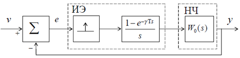
Рисунок 1 – Линейные системы
б) нелинейные системы рисунок 2.
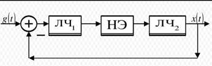
Рисунок 2 – Нелинейные системы
2) В зависимости от коэффициентов уравнений и вида уравнений как линейные, так и нелинейные системы подразделяются на:
а) системы, описываемые обыкновенными дифференциальными уравнениями с постоянными коэффициентами;
б) системы, описываемые обыкновенными дифференциальными уравнениями с переменными коэффициентами;
в) системы, описываемые уравнениями в частных производных;
г) системы с запаздыванием, описываемые уравнениями с запаздывающим аргументом.
3) По характеру представления сигналов различают:
а) непрерывные системы рисунок 3;
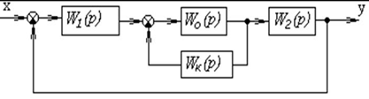
Рисунок 3 – Непрерывные системы
б) дискретные системы, среди которых выделяют импульсные, релейные, цифровые рисунок 4.
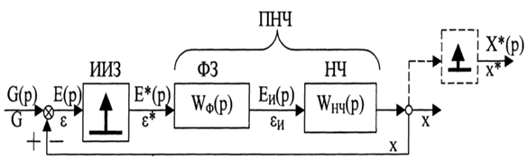
Рисунок 4 – Дискретные системы
4) По характеру процессов управления:
а) детерминированные системы – системы с определенными переменными и процессами;
б) стохастические системы – системы со случайными переменными и процессами.
5) По характеру функционирования. В зависимости от того, по какому закону изменяется заданное значение регулируемой величины, системы автоматического управления подразделяются на:
а) системы стабилизации, поддерживающие постоянство регулируемой величины, т.е. yзад(t) = const;
б) системы программного регулирования, в которых заданное значение регулируемой величины изменяется по определенной заранее временной программе;
в) следящие системы, в которых заданное значение регулируемой величины изменяется в соответствии с состоянием некоторого заданного вектора переменных во времени рисунок 5.
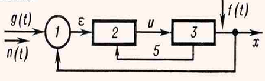
Рисунок 5 – Cледящие системы
г) системы оптимального управления, в которых показатель эффективности зависит не только от текущих значений координат, как в экстремальном регулировании, но также от характера их изменения в прошлом, настоящем и будущем, и выражается некоторым функционалом;
д) адаптивные системы, в которых автоматически изменяются значения yзад, собственные параметры или структура при непредвиденных изменениях внешних условий на основании анализа состояния или поведения системы так, чтобы сохранялось заданное качество ее работы рисунок 6
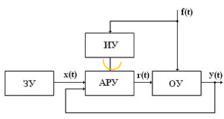
Рисунок 6 – Aдаптивные системы
Способы анализа САУ, законы управления и методы синтеза
Способы анализа САУ, законы управления и методы синтеза
Что нужно знать для управления?
Цель любого управления – изменить состояние объекта нужным образом (в соответствии с заданием). Теория автоматического регулирования должна ответить на вопрос: «как построить регулятор, который может управлять данным объектом так, чтобы достичь цели?» Для этого разработчику необходимо знать, как система управления будет реагировать на разные воздействия, то есть нужна модель системы: объекта, привода, датчиков, каналов связи, возмущений, шумов.
Модель – это объект, который мы используем для изучения другого объекта (оригинала). Модель и оригинал должны быть в чем-то похожи, чтобы выводы, сделанные при изучении модели, можно было бы (с некоторой вероятностью) перенести на оригинал. Нас будут интересовать в первую очередь математические модели, выраженные в виде формул. Кроме того, в науке используются также описательные (словесные), графические, табличные и другие модели.
Требования к управлению.
В целом можно выделить четыре основных требования:
• точность – в установившемся режиме система должна поддерживать заданное значение выхода системы, причем ошибка (разница между заданным и фактическим значением) не должна превышать допустимую;
• устойчивость – система должна оставаться устойчивой на всех режимах, не должна идти «вразнос» (корабль не должен идти по кругу при смене курса);
• качество переходных процессов – при смене заданного значения система должна переходить в нужное состояние по возможности быстро и плавно;
• робастность – система должна сохранять устойчивость и приемлемое качество даже в том случае, если динамика объекта и свойства внешних возмущений немного отличаются от тех, что использовались при проектировании
Связь входа и выхода
Любой объект взаимодействует с внешней средой с помощью входов и выходов. Входы – это возможные воздействия на объект, выходы – это те сигналы, которые можно измерить. Например, для электродвигателя входами могут быть напряжение питания и нагрузка, а выходами – частота вращения вала, температура.
Входы независимы, они «приходят» из внешней среды. При изменении информации на входе меняется внутреннее состояние объекта (так называют его изменяющиеся свойства) и, как следствие, выходы:
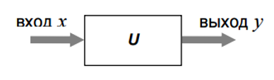
Рисунок 7
Это значит, что существует некоторое правило, по которому элемент преобразует вход «x» в выход «y». Это правило называется оператором. Запись y = U[x] означает, что выход y получен в результате применения оператора U ко входу x.
Построить модель – это значит найти оператор, связывающий входы и выходы. С его помощью можно предсказать реакцию объекта на любой входной сигнал. Рассмотрим электродвигатель постоянного тока. Вход этого объекта – это напряжение питания (в вольтах), выход – частота вращения (в оборотах в секунду). Будем считать, что при напряжении 1 В – частота вращения равна 1 об/сек, а при напряжении 2 В – 2 об/сек, то есть частота вращения равна по величине напряжению 1. Легко видеть, что действие такого оператора можно записать в виде
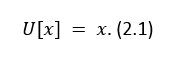
Предположим, что этот же двигатель вращает колесо и в качестве выхода объекта мы выбрали число оборотов колеса относительно начального положения (в момент t = 0). В этом случае при равномерном вращении произведение x ⋅ ∆t дает нам количество оборотов за время ∆t, то есть y(t) = x ⋅ ∆t (здесь запись y(t) явно обозначает зависимость выхода от времени t). Полученная зависимость справедлива только для постоянного входного сигнала. Если напряжение на входе) x (t меняется (все равно как!), угол поворота запишется в виде интеграла:
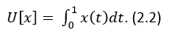
Оператор, который действует по такому правилу, называется оператором интегрирования. С помощью этого оператора можно, например, описать наполнение пустого бака водой. Если сечение бака S (в м2) постоянно по всей его высоте, то уровень воды h определяется как интеграл от потока воды q (в м3 /с), деленный на S:
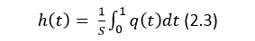
Обратный оператор – оператор дифференцирования – вычисляет производную:
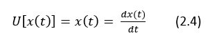
Обычно оператор дифференцирования обозначается буквой p. Запись y(t) = p x(t) внешне выглядит как «умножение» оператора p на сигнал x(t), но на самом деле обозначает действие этого оператора, то есть дифференцирование:
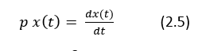
Где встречаются такие операторы? Приведем примеры из электротехники. Например, известно, что ток i (в амперах), проходящий по цепи с конденсатором, пропорционален производной от разности потенциалов u (в вольтах) на его пластинах:
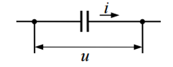
Рисунок 8
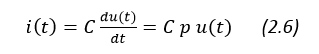
Здесь C – емкость конденсатора (измеряется в фарадах). Падение напряжения u на катушке индуктивности пропорционально производной от проходящего тока i:
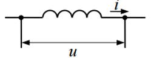
Рисунок 9
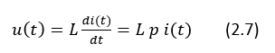
где L – индуктивность (измеряется в генри)
Оператор дифференцирования – это идеальный (физически нереализуемый) оператор, его невозможно реализовать на практике. Чтобы понять это необходимо помнить, что при мгновенном изменении сигнала его производная (скорость возрастания) будет равна бесконечности, а никакое реальное устройство не может работать с бесконечными сигналами.
Принципы автоматического регулирования
По принципу управления САУ можно разбить на три группы:
1. С регулированием по внешнему воздействию – принцип Понселе (применяется в незамкнутых САУ).
2. С регулированием по отклонению – принцип Ползунова-Уатта (применяется в замкнутых САУ).
3. С комбинированным регулированием. В этом случае САУ содержит замкнутый и разомкнутый контуры регулирования.
Принцип управления по внешнему возмущению
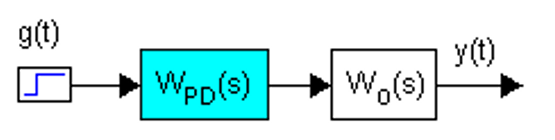
Рисунок 10
В структуре обязательны датчики возмущения. Система описывается передаточной функцией разомкнутой системы.
Достоинства:
• Можно добиться полной инвариантности к определенным возмущениям.
• Не возникает проблема устойчивости системы, т.к. нет ОС.
Недостатки:
• Большое количество возмущений требует соответствующего количества компенсационных каналов.
• Изменения параметров регулируемого объекта приводят к появлению ошибок в управлении.
• Можно применять только к тем объектам, чьи характеристики четко известны.
Принцип управления по отклонению
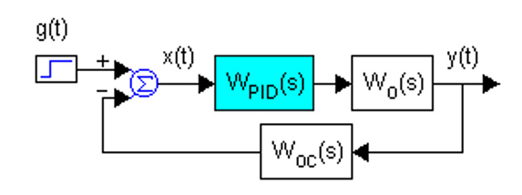
Рисунок 11
Система описывается передаточной функцией разомкнутой системы и уравнением замыкания: x(t)=g(t)−y(t)Wос(p)
Алгоритм работы системы заключен в стремлении свести ошибку x(t) к нулю.
Достоинства:
• ООС приводит к уменьшению ошибки не зависимо от факторов, ее вызвавших (изменений параметров регулируемого объекта или внешних условий).
Недостатки:
• В системах с ОС возникает проблема устойчивости.
• В системах принципиально невозможно добиться абсолютной инвариантности к возмущениям. Стремление добиться частичной инвариантности (не 1-ыми ОС) приводит к усложнению системы и ухудшению устойчивости.
Комбинированное управление
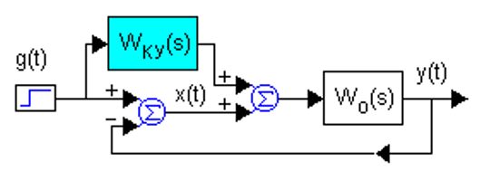
Рисунок 12
Комбинированное управление заключено в сочетании двух принципов управления по отклонению и внешнему возмущению. Т.е. сигнал управления на объект формируется двумя каналами. Первый канал чувствителен к отклонению регулируемой величины от задания. Второй формирует управляющее воздействие непосредственно из задающего или возмущающего сигнала.
Достоинства:
• Наличие ООС делает систему менее чувствительной к изменению параметров регулируемого объекта.
• Добавление канала(ов), чувствительного к заданию или к возмущению, не влияет на устойчивость контура ОС.
Недостатки:
• Каналы, чувствительные к заданию или к возмущению, обычно содержат дифференцирующие звенья. Их практическая реализация затруднена.
• Не все объекты допускают форсирование.
Программы и законы регулирования
Программа регулирования – план формирования задающего воздействия g(t) на систему.
Программа регулирования может быть:
• временной: y=y(t);
• параметрической: y=y(s1,s2,s3,…,sn).
Пример временной программы – план расхода газа для топки мартеновской печи (во время изменения фазовых состояний металлов нет смысла увеличивать расход газа – температура увеличиваться не будет). Пример параметрической программы – посадка самолета на палубу авианосца (в зависимости от бокового ветра, от изменений координат посадочной полосы, от веса остатка топлива, ...).
Закон регулирования – зависимость, по которой формируется регулирующее воздействие u(t) на объект из первичной информации: g(t) и/или x(t) и, возможно, f(t).
Законы регулирования бывают:
• линейные
• нелинейные
Классификация нелинейных законов регулирования:
1. Функциональные
2. Логические
3. Параметрические
4. Оптимизирующие
Линейные непрерывные законы регулирования
Под законом регулирования (управления) понимается алгоритм или функциональная зависимость, определяющая управляющее воздействие u(t) на объект:
u(t)=F(x,g,f). (2.8)
Линейные законы описываются линейной формой:
u(t)=k1x(t)+k2∫x(t)dt+k3∫∫x(t)dt2+… +k4x′(t)+k5x″(t)+… (2.9)
она же в операторной форме записи:
u(t)=x(t)[k1+k2/p+k3/2+…+k4p+k5p2+…]. (2.10)
Наличие в (2.10) чувствительности регулятора к пропорциональной, к интегральным или к дифференциальным составляющим в первичной информации x(t) определяет тип регулятора:
1. P – пропорциональный.
2. I – интегральный.
3. PI – пропорционально интегральный (изодромный).
4. PD – пропорционально дифференциальный.
5. и более сложные варианты – PID, PIID, PIDD, …
Под синтезом системы автоматического управления понимается направленный расчет, имеющий конечной целью отыскание рациональной структуры системы и установление оптимальных величин параметров ее отдельных звеньев. По отношению к основе синтеза в настоящее время имеются разные точки зрения.
Синтез можно трактовать как пример вариационной задачи и рассматривать такое построение системы, при котором для данных условий работы (управляющие и возмущающие воздействия, помехи, ограничения по времени работы и т. п.) обеспечивается теоретический минимум ошибки.
Синтез также можно трактовать как инженерную задачу, сводящуюся к такому построению системы, при котором обеспечивается выполнение технических требований к ней. Подразумевается, что из многих возможных решений инженер, проектирующий систему, будет выбирать те, которые являются оптимальными с точки зрения существующих конкретных условий и требований к габаритам, весу, простоте, надежности и т. п.
Иногда в понятие инженерного синтеза вкладывается еще более узкий смысл и рассматривается синтез, имеющий целью определение вида и параметров корректирующих средств, которые необходимо добавить к некоторой неизменяемой части системы (объект с управляющим устройством), чтобы обеспечить требуемые динамические качества.
При инженерном синтезе системы автоматического управления необходимо обеспечить, во-первых, требуемую точность и, во-вторых, приемлемый характер переходных процессов.
Решение первой задачи в большинстве случаев сводится к определению требуемого общего коэффициента передачи разомкнутой системы и, в случае необходимости, — вида корректирующих средств, повышающих точность системы (комбинированное управление и т. н.). Эта задача может решаться при помощи определения ошибок в типовых режимах па основе тех критериев точности, которые были изложены в главе 8. Решение этой задачи, как правило, не сопряжено с трудностями принципиального или вычислительного характера, так как критерии точности достаточно просты для их практического использования. В сложных случаях можно прибегать к помощи моделирования. Решение оказывается сравнительно простым вследствие необходимости установления значений относительно небольшого числа параметров. В простейшем случае необходимо найти только коэффициент передачи разомкнутой системы.
Решение второй задачи — обеспечение приемлемых переходных процессов — оказывается почти всегда более трудным вследствие большого числа варьируемых параметров и многозначности решения задачи демпфирования системы. Поэтому существующие инженерные методы часто ограничиваются решением только второй задачи, так каких авторы считают, что обеспечение требуемой точности может быть достаточно просто сделано на основании использования существующих критериев точности и совершенствования их практически не требуется.
В настоящее время для целей синтеза систем автоматического управления широко используются вычислительные машины, позволяющие производить полное или частичное моделирование проектируемой системы. При таком моделировании становится возможным наиболее полно исследовать влияние различных факторов нелинейности, зависимость параметров от времени и т. н.
Однако моделирование на вычислительных машинах не может заменить расчетных методов проектирования, которые во многих случаях позволяют исследовать вопрос в общем виде и среди многих решений найти оптимальное. Поэтому, несмотря на развитие и распространение машинных методов синтеза, теория должна располагать собственными методами, которые дополняли бы моделирование и являлись бы теоретической базой при отыскании оптимального решения
Анализ и проектирование САУ на основе математических моделей
Проектирование систем автоматического управления заключается в:
• Определение параметров работы системы САУ
• Определение режимов работы САУ
• Разработка общей функциональной схемы системы САУ
• Разработка детальных проектных решений по схемам электрических подключений
• Компоновка оборудования в щиты управления
• Размещение щитов управления, приборов и кабельных трасс на плане объекта
Вся документация разрабатывается согласно соответствующим нормативным документам.
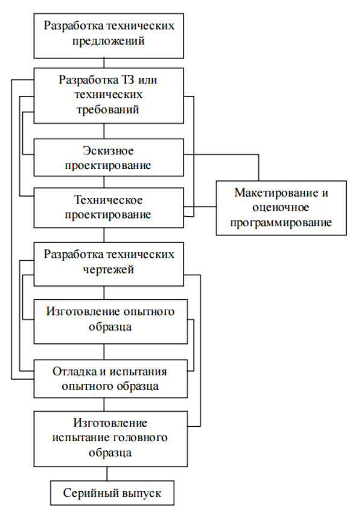
Рисунок 13 - Алгоритм разработки САУ
Модели линейных объектов
Дифференциальные уравнения
Составляя модель объекта на основании физических законов, мы чаще всего получаем систему дифференциальных уравнений первого и второго порядка. Для примера покажем, как построить модель двигателя постоянного тока, используя законы механики и электротехники.
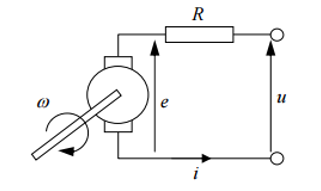
Рисунок 14 - Модель электродвигателя
Вход этого объекта – напряжение якоря u(t) (в вольтах), выход – угол поворота вала θ(t) (в радианах). Вал двигателя начинает вращаться, когда приложено напряжение питания. Если напряжение не меняется, угловая скорость вращения ω(t) (в радианах в секунду) остается постоянной, при этом угол θ(t) равномерно увеличивается. Чем больше напряжение, тем быстрее вращается вал. Если подключить нагрузку, скорость вращения постепенно уменьшается до нового значения, при котором вращающий момент двигателя будет равен моменту сопротивления (нагрузки). Пока эти моменты равны, скорость вращения остается постоянной и ее производная равна нулю. Угловая скорость вращения ω(t) вычисляется как производная от угла поворота вала θ(t), то есть ω(t)= (dθ(t))/dt. Соответственно, угол θ(t) – это интеграл от угловой скорости. В механике уравнение вращательного движения обычно записывают в виде:
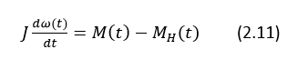
где M(t) – вращающий момент (измеряется в H•м), MH(t) – момент нагрузки (возмущение, также в H•м). Буквой J обозначен суммарный момент инерции якоря и нагрузки (в кг•м2). Величина момента инерции говорит о том, насколько легко «разогнать» двигатель (чем больше момент инерции, тем сложнее «разогнать»). В нашем случае момент M(t) – это электромагнитный момент двигателя, который вычисляется по формуле:
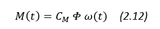
где CM – коэффициент, Φ – магнитный поток, создаваемый обмоткой возбуждения (измеряется в веберах); i(t) – ток якоря (в амперах), который может быть найден из уравнения:
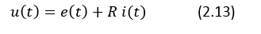
где e(t) – электродвижущая сила (ЭДС) якоря (в вольтах) и R – сопротивление якорной цепи (в омах). В свою очередь, ЭДС рассчитывается через магнитный поток и частоту вращения:
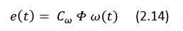
где Cω – коэффициент. Вводя новые постоянные k1 = CM ⋅Φ и k2 = Cω ⋅Φ, можно записать модель двигателя в виде системы уравнений.

Такая модель описывает связи реальных сигналов в системе и её внутреннее устройство.
Часто достаточно знать, как будет реагировать объект на заданный входной сигнал (управление). При этом его внутреннее устройство нас не очень интересует, то есть мы рассматриваем объект в качестве «черного ящика». Подставив второе уравнение из системы в третье, найдем i(t) и подставим в первое уравнение. Переходя к переменной θ(t), получаем:
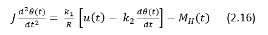
Или, перенося все члены, зависящие от θ(t), в левую часть равенства
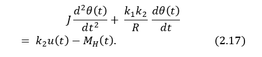
Это дифференциальное уравнение второго порядка, связывающее вход u(t) и нагрузку M(t) H с выходом θ (t). В сравнении с системой (1), все внутренние сигналы исходной модели (e(t) и i(t)) были исключены из уравнений. Поэтому уравнение (2) называется уравнением «вход- выход». Порядком модели называют порядок соответствующего дифференциального уравнения. В данном случае мы получили модель второго порядка. Это простой пример, как на основе физических законов строятся математические модели объектов управления. Как правило, они представляют собой дифференциальные уравнения.
Модели в пространстве состояний
Для того, чтобы было легче исследовать модель объекта, желательно привести ее к некоторому стандартному виду, для которого уже есть готовые общие решения. Таким «стандартом» в теории управления считается система дифференциальных уравнений первого порядка, которая называется нормальной формой Коши.
Рассмотрим снова модель электродвигателя, считая, что M(t) = 0 H (нагрузки нет). Вспомнив, что ω(t) = θ(t), можно записать (2.17) в виде системы:
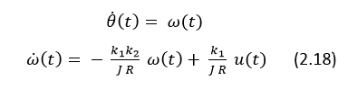
Эта система дифференциальных уравнений первого порядка быть записана в матричной форме:
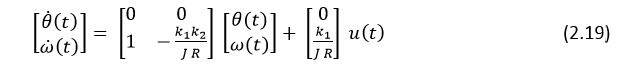
Значения θ(t) и ω(t) определяют состояние двигателя в момент времени t. Это значит, что зная их значения в некоторый момент времени t_0 и входной сигнал u(t) при всех t ≥ t_0 можно рассчитать поведение объекта для любого последующего момента. При этом предыдущие значения θ(t), ω(t) и u(t) (при t < t_0 ) не играют никакой роли.
Поэтому θ(t) и ω(t) называются переменными состояния, а вектор 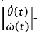 - вектором состояния.
В теории управления принято обозначать вектор состояния через x(t), вход объекта (сигнал управления) – через u(t). Тогда модель (2.19) может быть записана в виде:
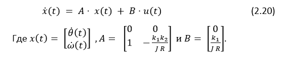
Модель (2.20) связывает вход u(t) и вектор состояния x(t), поэтому она называется моделью вход-состояние.
Полная модель объекта в пространстве состояний содержит еще одно уравнение – уравнение выхода, которое показывает, как формируется выход объекта y(t):
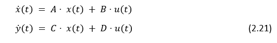
Эта модель называется моделью вход-состояние-выход. Выходная координата для двигателя постоянного тока – это угол поворота вала:
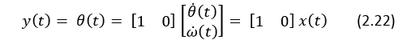
так что C = [1 0] и D = 0 . Если же в качестве выхода принять угловую скорость, то C = [0 1].
С помощью модели (2.21), изменяя матрицы C и D, можно принять за выход любую линейную комбинацию переменных состояния и входа. Во многих практических задачах выход – это одна или несколько переменных состояния, которые мы можем измерить. Поскольку момент инерции J, сопротивление якоря R и коэффициенты 1 k и 2 k не зависят от времени, матрицы A , B , C и D в модели (2.21) – постоянные. Такие объекты называются стационарными, в отличие от нестационарных объектов, параметры которых изменяются во времени. Запись моделей в единой форме (2.21) позволяет отвлечься от смысла переменных состояния и исследовать системы разной природы стандартными методами, которые хорошо разработаны и реализованы в современных компьютерных программах. Покажем, как уравнения вида (2.21) могут быть решены и чем удобна именно такая форма записи. Предположим, что мы знаем начальные условия, то есть вектор состояния x(0), при t = 0 . Вспомним, что знание x(0) и входа u(t) при всех t > 0 дает возможность однозначно определить дальнейшее поведение этого объекта. Первое уравнение в (2.21) позволяет найти производную, то есть, скорость изменения вектора состояния x(t) в любой момент времени. Будем считать, что при 0 ≤ t ≤ ∆t, где ∆t – малый интервал времени, эта производная не меняется. Тогда значение вектора состояния при t = ∆t приближенно определяется формулой:
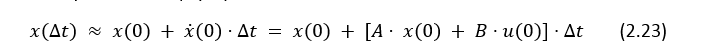
То есть, его можно легко вычислить. Зная x(∆t) и сигнал управления u(∆t), находим выход системы в тот же момент:
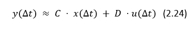
Эту методику можно применять и дальше, в конце второго интервала получаем
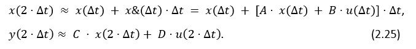
Таким образом, можно (приближенно) рассчитать выход системы при всех t > 0 . Конечно, точность будет тем выше, чем меньше ∆t, однако объем вычислений при этом также увеличится. Этот метод приближенного решения дифференциальных уравнения называется методом Эйлера. Так как мы не делали никаких предположений о постоянных матрицах A, B, C и D, его (как и другие, более совершенные методы) можно использовать без изменений для решения любых уравнений вида (2.25).